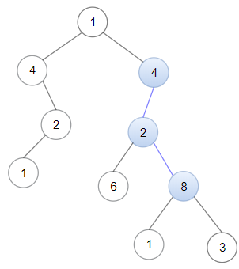
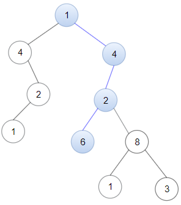

1367. 二叉树中的链表
双层 DFS：外层把树里每个结点都当成链表起点试一遍；内层从起点沿树向下，值相等才继续走孩子。
思路
- 外层
isSubPath：对每个结点问「以我为开头能匹配吗」，不行就递归问左右子树——保证不漏任何起点。 - 内层
match：链表和树同步往下走，值相等才能继续；链表走完返回 true，树走完了返回 false，两个终止条件顺序不能反。 - 内层失败后不「原地重启」：换起点的活全部交给外层递归，代码才不会绕晕。
图解
最优解
1class Solution {2 public boolean isSubPath(ListNode head, TreeNode root) {3 if (root == null) return false;4 // 从当前结点出发能匹配，或在左右子树里另找起点5 return match(head, root) || isSubPath(head, root.left) || isSubPath(head, root.right);6 }7 8 // 从 node 出发向下，逐个匹配链表结点9 private boolean match(ListNode head, TreeNode node) {10 if (head == null) return true; // 链表走完：整条匹配成功11 if (node == null) return false; // 树走完了链表还没走完12 if (head.val != node.val) return false;13 // 值相等：沿左右孩子继续匹配下一个链表结点14 return match(head.next, node.left) || match(head.next, node.right);15 }16}题目
给你一棵以 root 为根的二叉树和一个 head 为第一个节点的链表。
如果在二叉树中，存在一条一直向下的路径，且每个点的数值恰好一一对应以 head 为首的链表中每个节点的值，那么请你返回 True ，否则返回 False 。
一直向下的路径的意思是：从树中某个节点开始，一直连续向下的路径。
示例 1：

输入：head = [4,2,8], root = [1,4,4,null,2,2,null,1,null,6,8,null,null,null,null,1,3] 输出：true 解释：树中蓝色的节点构成了与链表对应的子路径。
示例 2：

输入：head = [1,4,2,6], root = [1,4,4,null,2,2,null,1,null,6,8,null,null,null,null,1,3] 输出：true
示例 3：
输入：head = [1,4,2,6,8], root = [1,4,4,null,2,2,null,1,null,6,8,null,null,null,null,1,3] 输出：false 解释：二叉树中不存在一一对应链表的路径。
提示：
- 二叉树和链表中的每个节点的值都满足
1 <= node.val <= 100。 - 链表包含的节点数目在
1到100之间。 - 二叉树包含的节点数目在
1到2500之间。
题面取自力扣当前版本。
数据快照 2026-11-04。题面版权归力扣所有，本站点仅供本人学习使用，请勿对外发布。